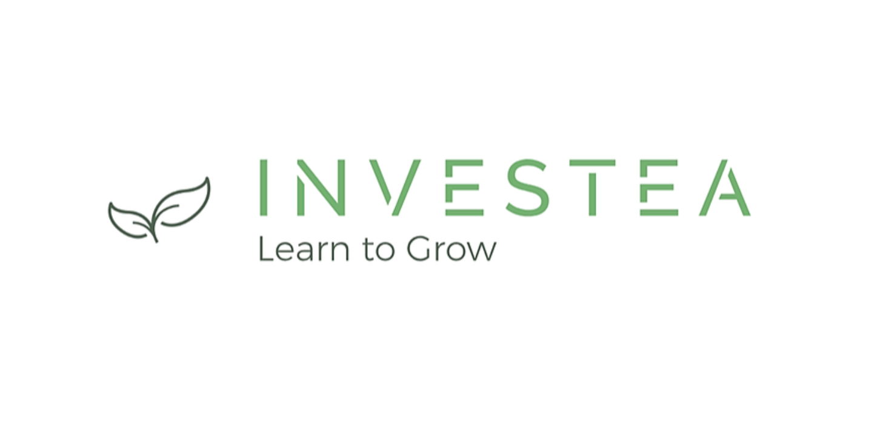

Consequi
Backend Engineer - Group Project

Consequi is a new web application that allows users to create goals and find people to help them remain accountable to achieving those goals.
Big Mood
Product Manager & Backend Engineer - Team Project

A mood based content generator.
Homegrown AVL Trees
Computer Science - Group Project
Implementing an AVL Tree, which is a self-balancing binary search tree, in Python.
Showthat
Fullstack Engineer - Personal Project
A web application that allows helps users to find their new favorite critically acclaimed television show. This program was written in JavaScript and made use of Node.js and Express to create functionality for the user to CRUD multiple resources.
Investea
Product Manager - Group Project
Investea seeks to do what other investment learning platforms haven’t — meet millennials where they are. Investea follows the stock market’s actual data, in real time. The only thing that isn’t authentic is the money that you invest.
Retro Retire
Fullstack Engineer - Personal Project
Retro Retire was born from the idea that professionals should be able to find a middle ground between working full time and completely retiring. Written in JavaScript with Node.js and Express to allow users to upload job postings targeted toward the early/ semi-retired community.